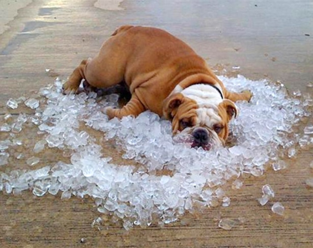
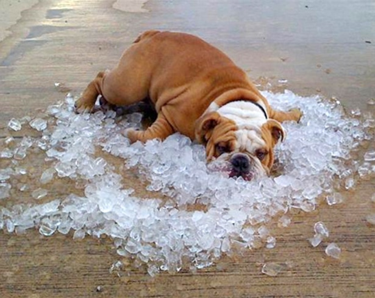

🔥 When I say, "I'm Hot..."
- I'm just bein' honest" 🔥
Beat the Heat (Part 1)
😎 What to wear when you want to be cool:
☀️ Wear light, loose clothing
in natural, breathable fabrics.
Light colors reflect, rather than absorb, the sun's rays.
Loose clothing allows airflow, which helps you stay cooler
🔥Stay away from tight clothing
🧊 Cooler fabrics that allow airflow:🧊
Cotton
Linen
Seersucker
Chambray
Images: Seersucker. Chambray.
☀️Materials to avoid:
Ditch jeans. Denim is one of the heaviest fabrics.
☀️☀️ Other materials to avoid:
nylon, acrylic, polyester
Nylon: As a fully synthetic material and is not breathable
clothing made from nylon tends to trap heat and sweat against the skin.
Acrylic:
Much like nylon, acrylic is not a natural fabric.
The material can often be hot and abrasive, making it one of the worst summer fabrics.
Polyester:
This common fabric is travel-friendly and wrinkle-resistant, but it also resists moisture,
making it less than ideal for hot summer weather.
☀️ Protect against sunburn.
Sunburn affects your body's ability to cool itself,
so protect yourself while outdoors with a wide-brimmed hat and
sunglasses and use a broad-spectrum sunscreen with an SPF of 30 or higher.
Apply sunscreen generously and reapply every two hours, or more often if you're sweating.
***bring hat, sunglasses, sunblock
Cooling towels are also recommended to stay cool. Image of cooling towel